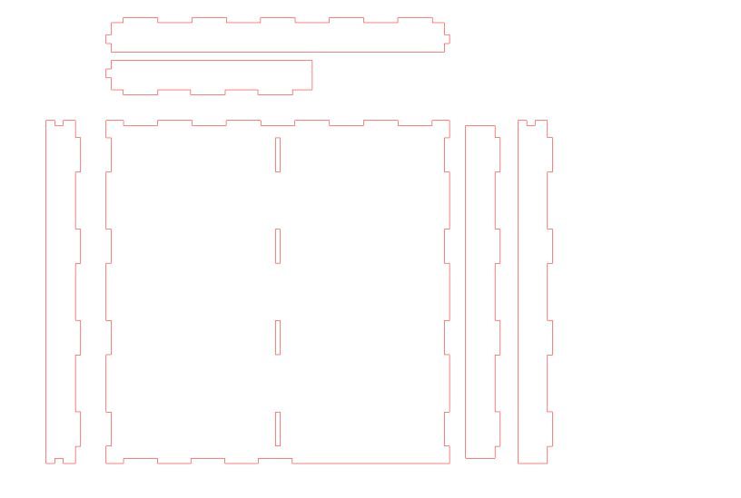
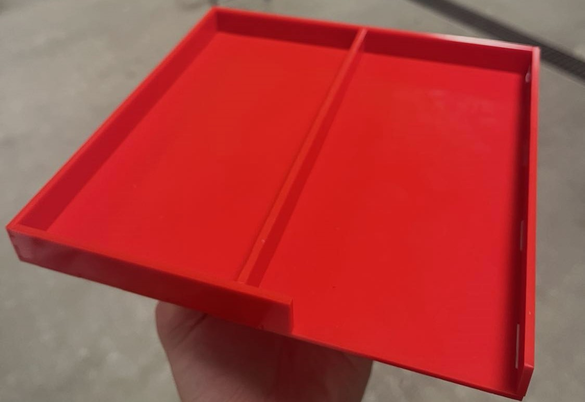

Markmið verkefnis.
Markmið verkefnis 2 var að kynnast tölvustuddum skurði og ná að nýta hann í eitthvað gagnlegt. Verkefnið skiptist í þrjá hluta, einn hluta sem hópaverkefni og tvo hluti sem einstaklingsverkefni. Í hópaverkefninu átti að velja geislaskera og ákvarða með prófunum kerf fyrir skerann. Í einstaklingsverkefninu átti í fyrsta lagi að hanna og skera út teikningu á vínyl og í seinna lagi átti að hanna parametrískt og pressfittað módel af byggingareiningum. Einingarnar voru síðan skornar út með geislaskera og settar saman.
Hópaverkefni - Ákvörðun á kerf
Félagi minn í þessum hluta verkefnisins var enginn annar enn Aðalsteinn Ari og saman prófuðum við ákváðum stærð á kerf fyrir geislaskerann. Til þess að ákvarða kerf geislaskerans byrjuðum við að teikna 12 samhliða kassa í Inkscape og skárum þá síðan út á 3mm acryl plötu með geislaskera sem er sagt betur frá að neðan. Eftir það gátum við mælt heildarlengdina á gatinu eftir kassana og síðan mælt lengdina á öllum kössunum samhliða. Lengdin á gatinu utan um kassana gaf 119,4 mm og lengd kassana saman var 117,7 mm. Mismunurinn þar á milli er 1,7 mm eða 0,17 cm. Svo deilum við því með fjölda bila milli kassana sem var 13 og þá er 0,17cm/13 = 0,0131 cm eða 0,131 mm. Og þar með var kerf-ið fundið.
Vínylskurður
Í þessum hluta verkefnisins átti að nota vínylskera til þess að skera út eitthvað á vínyl límmiða. Ég ákvað að skera út stafi sem stöfuðu "VínsMökkun Robotics". Til þess að fá þessa stafi notaði ég síðuna Fontmeme og fann leturgerð sem ég fílaði sem heitir Designer og gat halið niður sem .png skrá. Þá leit hönnunin svona út:
Næst setti ég nýju hönnunina inn í Inkscape og þurfti þar að velja "trace bitmap" til þess að fá myndina á vigra form. Síðan setti ég þykkt línanna í 0,02 mm og invertaði myndinn og gat næst hlaðið myndinni niður sem pdf. Ég fékk hjálp frá Trausta félaga mínum við að sitja myndina mína í vínylskerann og skera út sem límmiða. Það var smá vesen að koma límmiðanum sjálfum af efninu eins og sést hér að neðan.
Geislaskurður
Markmiðið í þessum hluta verkefnisins var að hanna og skera út geirneglt, parametrískt módel af byggingareiningum. Í upphafi var eytt nokkrum tíma að skoða hugmyndir að hönnunum sem ég gæti skorið út. Mig langaði að gera eitthvað sem væri nothæft enn á sama tíma flott. Ég vafraði á veraldarvefnum í leit að innblæstri og notaði þá helst Pinterest.
Eftir langa og erfiða leit að hugmyndum ákvað ég að búa til náttborðsbakka sem er hólfaskiptur fyrir síma annars vegar og svo allt annað hins vegar. Við hönnunina á bakkanum notaðist ég við Fusion 360 frá AutoDesk.
Fusion 360
Hönnunarforsendurnar mínar að náttborðsbakkanum voru þær að veggirnir þyrftu að vera stuttir, bakkinn átti að vera hólfaskiptur og þurfti að vera pláss fyrir snúru að hlaða símann. Þegar hannað var bakkann í Fusion var notast við myndbönd 1, 2 og 3 um parametra frá FrabLab Akureyri. Ég lenti í ágætis veseni að gera festingarnar gerðar með "rectangular pattern" parametrískar. Mér tókst að laga það með því að extruda sketchana og velja "new body", þar með urðu allar holur og hliðar parametrískar. Eftir nokkrar tilraunir á að teikna kassann upp kom ég upp með þessa hönnun:
Við val á parametrum hafði ég stærð náttborðsins í huga og vildi ég ekki hafa hann stærri enn 200x200 mm á hæð og breidd. Parametrana má sjá í mynd hér að ofan. Þegar hönnunin sjálf var tilbúin þurfti ég að gera þetta tilbúið fyrir skurðinn. Þá var byrjað að aligna alla hliðarfleti við botnplanið og setja ágætis bil á milli þeirra eins og sést á myndinni að ofan. Eftir að allar hliðar voru alignaðar við botnflötinn þurfti að fara í manufacture, velja geislaskera og skrifa inn kerf. Ég notaði kerf 0,2 mm þrátt fyrir að hafa fengið 0,13 mm í prófuninni þar sem ég var búinn að frétta að það hentaði best við hönnun á pressfit módelum. Því næst náði ég í módelið sem .dxf skrá.
InkScape
Ég opnaði skránna í Inkscape og það fyrsta sem ég gerði var að breyta stærð blaðsins í 500x500 mm þar sem það er stærð acryl plötunnar sem á að skera í. Í Inkscape þurfti að velja þykkt línanna það sama og kerf geislaskerans eða 0,2 mm. Ég þurfti að velja trace bitmap til þess að fá myndina á vigra form.
Niðurstöður
Eftir að allar hliðar höfðu verið skornar út á rauða 3mm acryl plötu var eina eftir að púsla einingunum saman. Einingarnar smell pössuðu saman og var því smá bras að þrýsta öllum festipunktum saman enn það tókst að lokum. Útkoman var mjög ánægjuleg enn eini gallinn er litur módelsins þar sem rauður passar alls ekki á náttborðið hjá mér. Ég er að íhuga að lita módelið enn þangað til þarf þetta að duga.

Tímatafla
| Lýsing á hluta verkefnis | Tími [klst] |
|---|---|
| Ákvörðun á kerf | 1,5 |
| Hönnun og hugmyndavinna fyrir vínylskurð | 1,5 |
| Vínylskurður | 1 |
| Hugmyndavinna fyrir geislaskurð | 4 |
| Hönnun og teikning fyrir geislaskurð | 8 |
| Geislaskurður og samsetning | 2 |
| Skráning á heimasíðu | 5 |
| Heildar tími í klst | 23 |